Decoding disparities:
Network analysis and data science for HIV prevention
Patrick Janulis
Modern Approaches to HIV Prevention
Current Challenges in HIV Prevention
What causes racial disparities in HIV?
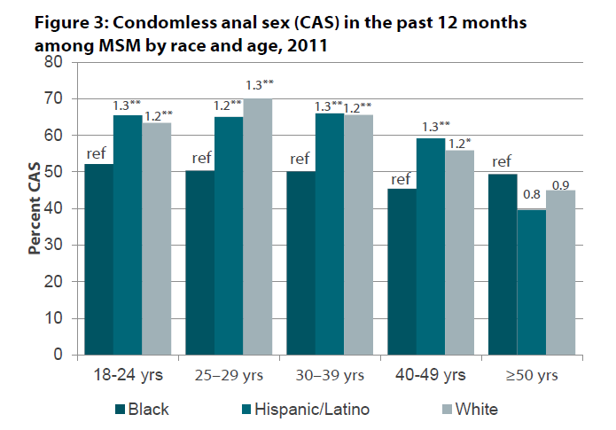What causes racial disparities in HIV?
Network Structure
Network Structure as Driver of Racial Disparities
| Concurrency |
Network Structure as Driver of Racial Disparities
| Degree |
Network Structure as Driver of Racial Disparities
| Homophily |
Are there racial differences in concurrency among YMSM?

|
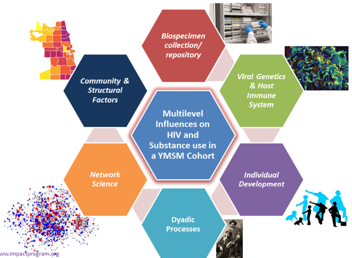 |
|---|---|
Demographics
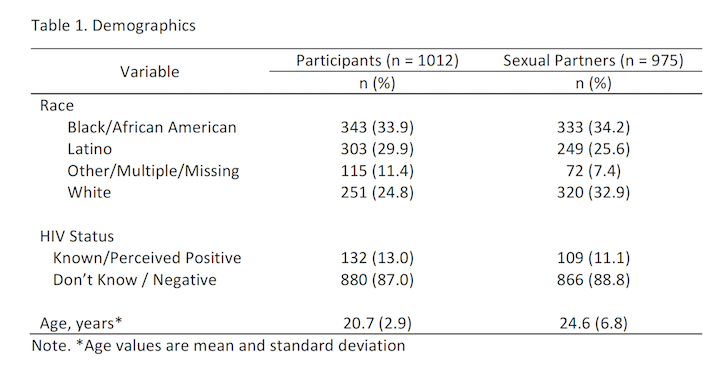Modeling Social Network Data
Exponential Random Graph Models (ERGMs)
How ERGMs Work | ||
|---|---|---|
|
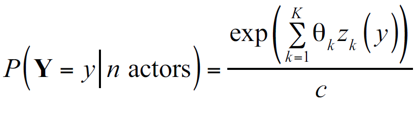 | |
Observed Network |
Simulated Network |
ERGMs for Ego-centric Network Data
Whole versus Egocentric Data
| Whole Network | Egocentric Network |
Are there racial differences in concurrency among YMSM?
| Models | |
| Model 1 | = Race (Main Effect) + Homophily (Constrained) |
| Model 2 | = ... + Homophily (Unconstrained) |
| Model 3 | = ... + Concurrency (Constrained) |
| Model 4 | = ... + Concurrency (Unconstrained) |
| Note. Covariates in all models: age, HIV status, and HIV homophily | |
| Model 1 |
| Model 1 |
| 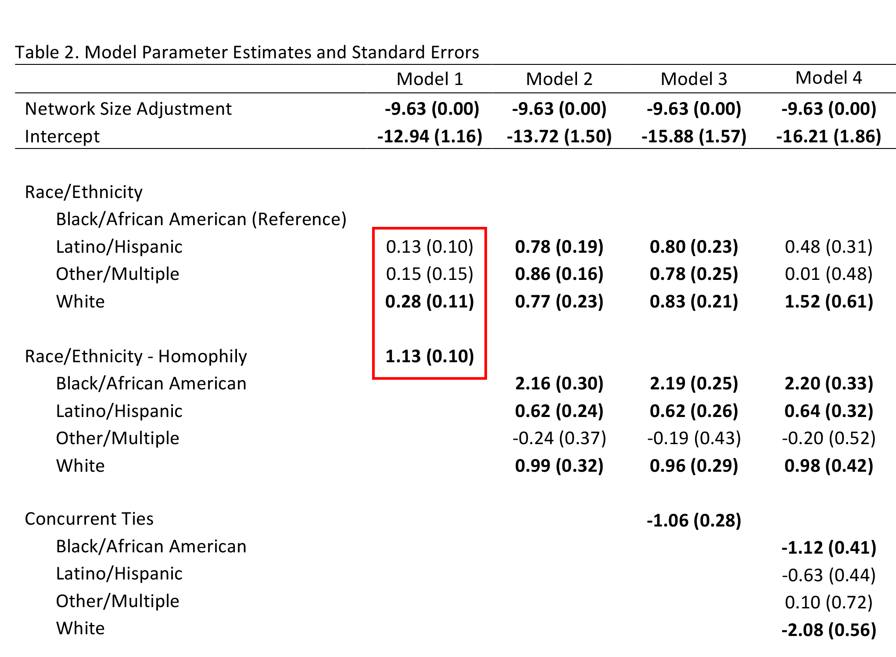 |
| Model 1 |
| 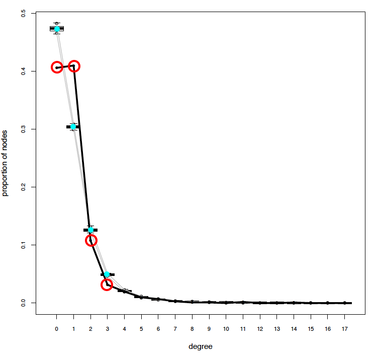 |
| Model 2 |
| 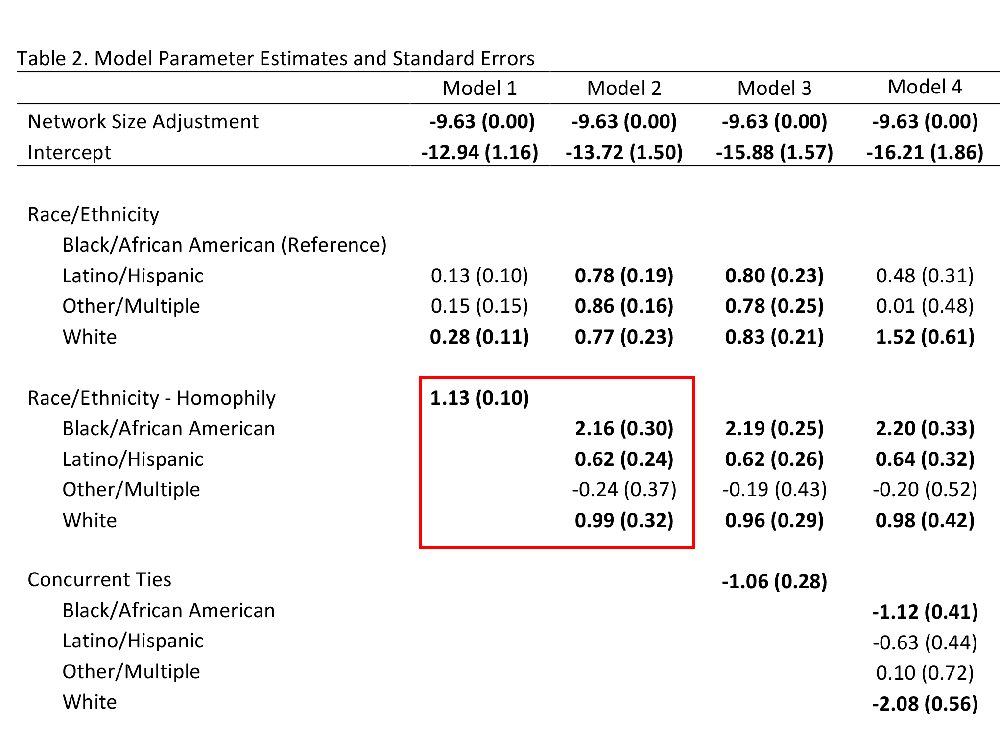 |
| Model 2 |
| 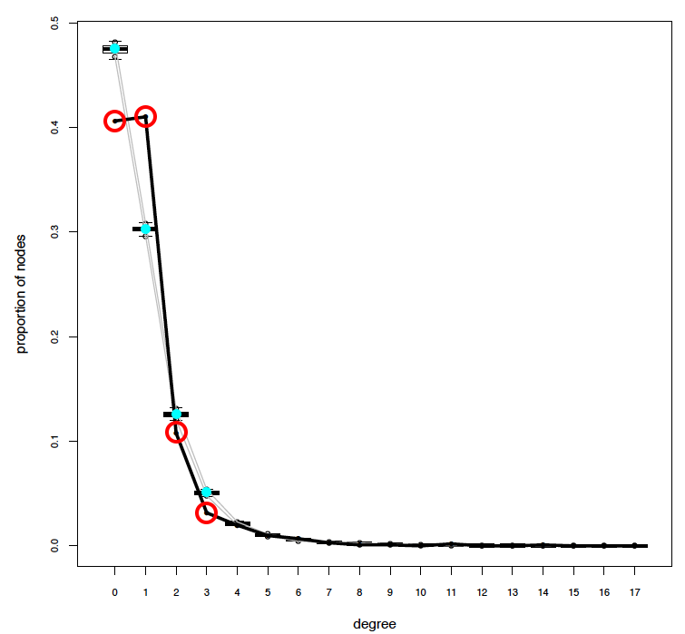 |
| Model 3 |
| 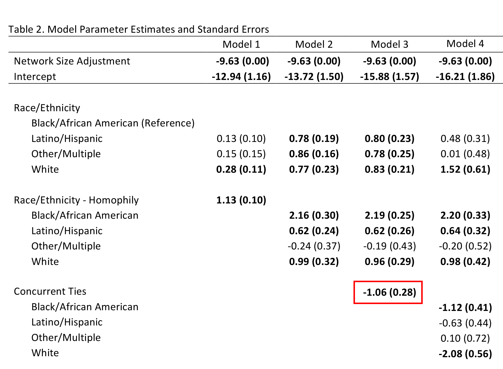 |
| Model 3 |
| 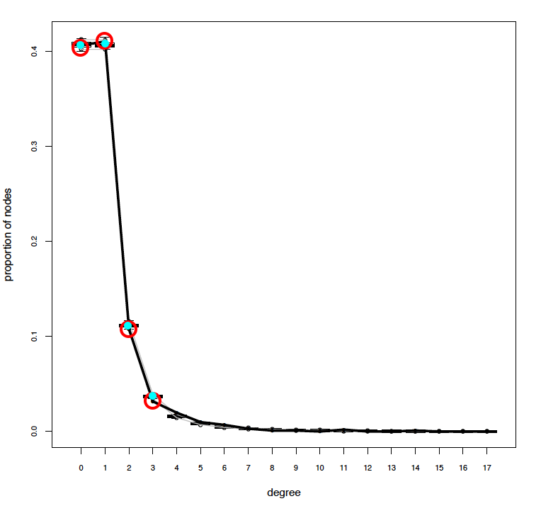 |
| Model 4 |
| 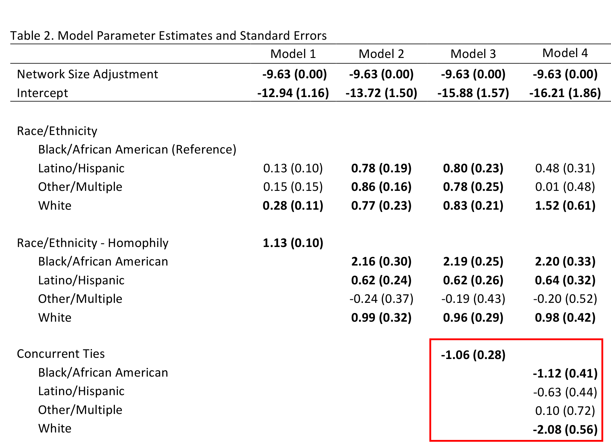 |
| Model 4 |
| 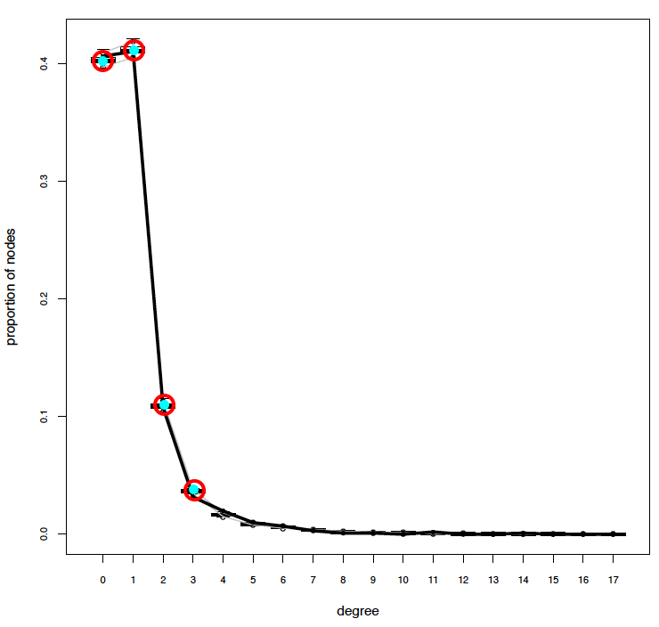 |
| Model 3 |
| 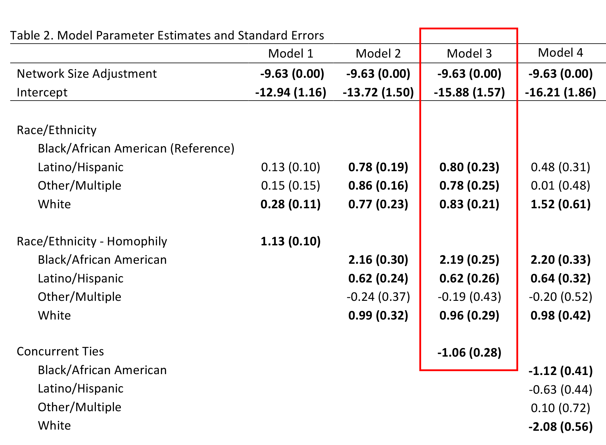 |
| Model 3 |
| 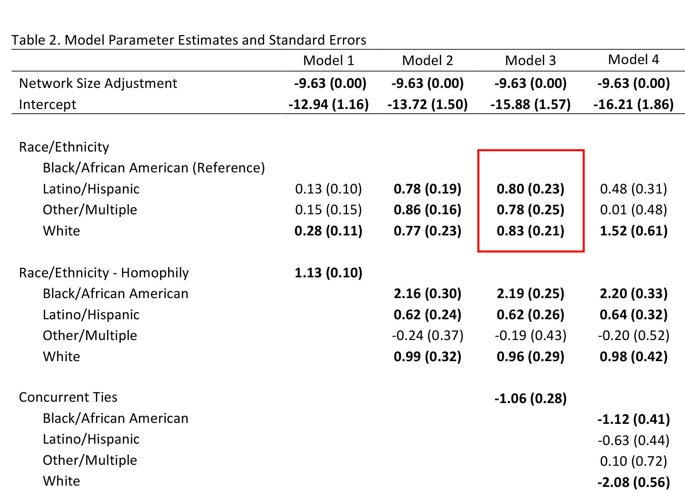 |
| Model 3 |
| 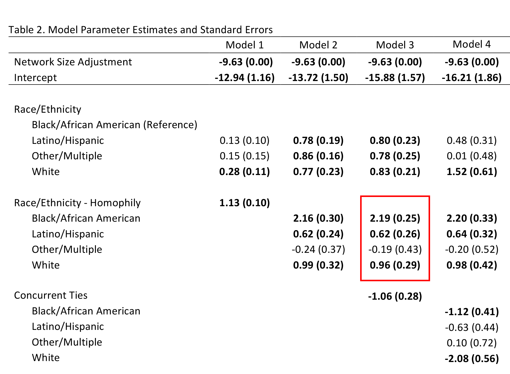 |
| Model 3 |
| 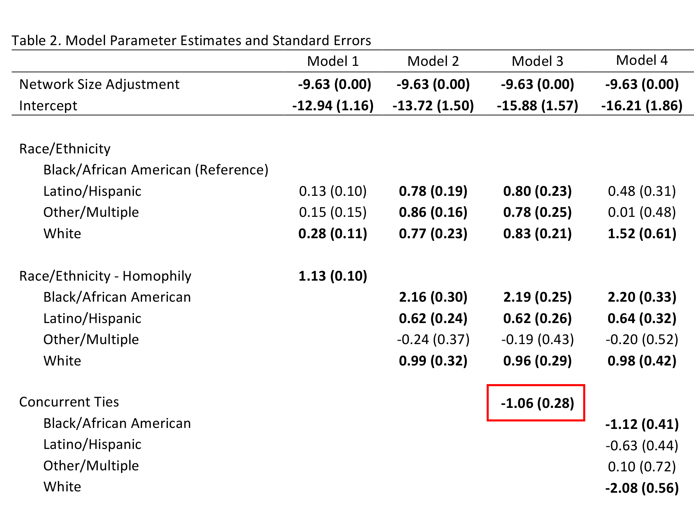 |
Take-home |
|---|
|
Tools to Capture, Process, and Store Complex Data
Traditional Network Capture
| 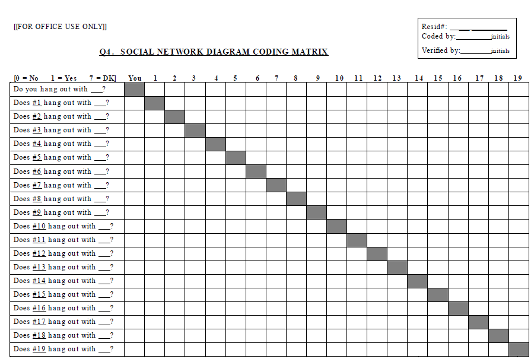 | 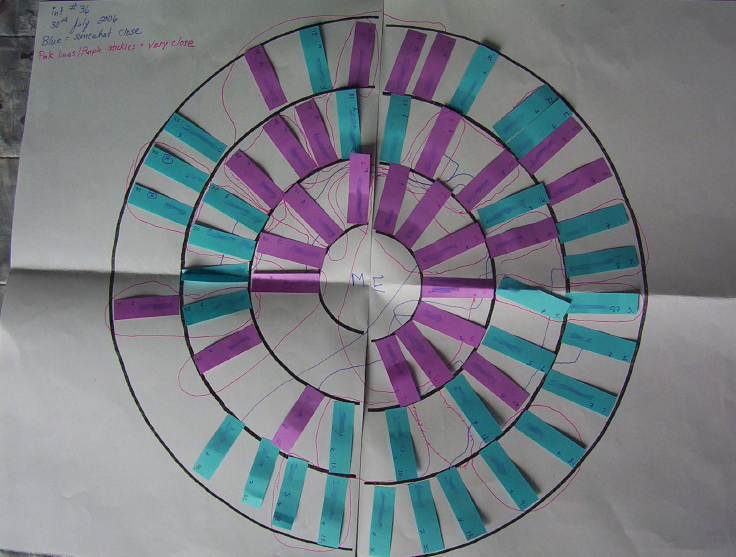 |